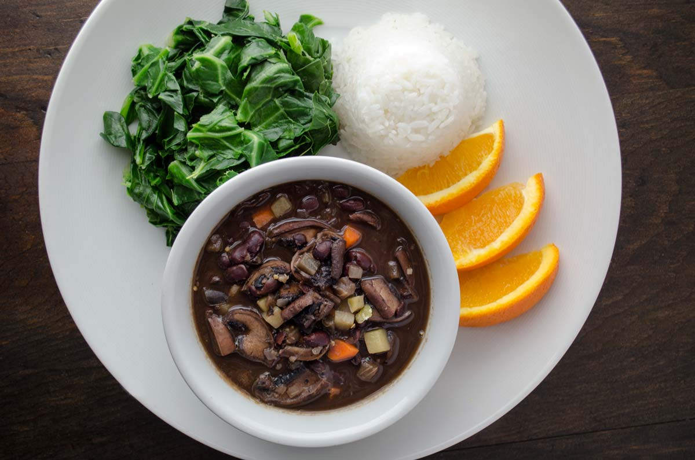

Feijoada!!

Un plato tipico Brasileño
La feijoada es un plato tradicional de la cocina brasileña que se caracteriza por ser un estofado
espeso y sabroso preparado con frijoles negros cocidos y diversas carnes de cerdo y embutidos.
La feijoada, aunque ahora es considerada uno de los platos más emblemáticos de la cocina brasileña,
tiene sus raíces en la historia de la esclavitud en Brasil.
Ingredientes
- Frijoles negros
- Carne de cerdo
- Chorizo
- Cebolla
- Salchicha ahumada
- Ajo
- Aceite
Pasos
- Lava los frijoles negros en un colador y déjalos escurrir.
- En una olla grande, coloca los frijoles y cúbrelos con agua fría. Deja que los frijoles se remojen durante al menos 8 horas o durante la noche.
- Después de remojar, escurre y enjuaga nuevamente los frijoles.
- En una olla grande y profunda, comienza a cocinar las carnes. Para ello, calienta un poco de aceite de cocina y agrega las carnes de cerdo (cerdo salado, costillas, orejas y patas de cerdo) cortadas en trozos. Sofríelas hasta que estén doradas.
- Agrega la cebolla picada y el ajo picado a la olla y saltea hasta que estén dorados y fragantes.
- Añade los frijoles escurridos a la olla junto con suficiente agua para cubrirlos por completo. Agrega hojas de laurel, comino y pimienta negra al gusto.
- Lleva la mezcla a ebullición y luego reduce el fuego a bajo. Cubre la olla y deja cocinar a fuego lento durante varias horas (generalmente de 2 a 3 horas), o hasta que los frijoles estén tiernos y el caldo se haya vuelto espeso y sabroso.
- Durante la cocción, asegúrate de remover ocasionalmente y agregar más agua si es necesario para evitar que los frijoles se sequen o quemen.
- Mientras se cocina la feijoada, puedes cocinar el chorizo y la salchicha ahumada en una sartén aparte hasta que estén cocidos y dorados.
- Una vez que los frijoles estén cocidos y las carnes estén tiernas, ajusta la sazón con sal y pimienta si es necesario.
- Sirve la feijoada caliente con arroz blanco y los acompañamientos tradicionales, como naranjas en rodajas, collard greens y farofa.